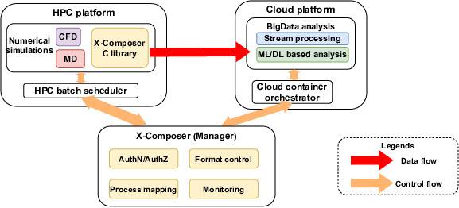
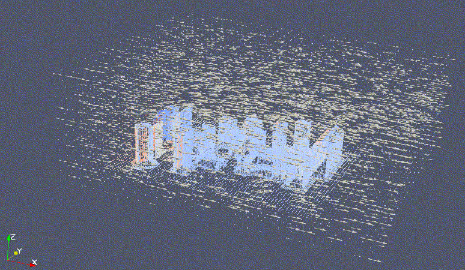
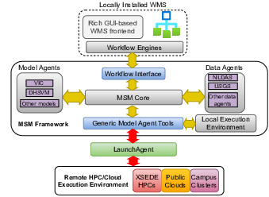
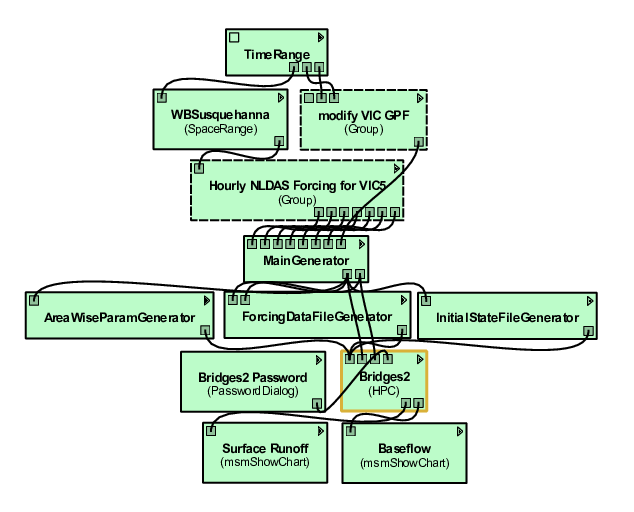
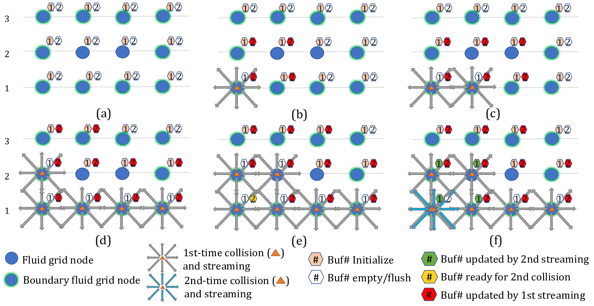
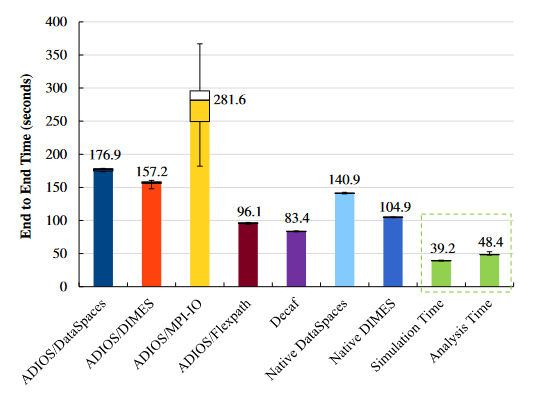
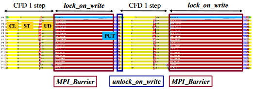

Feng Li¶
Feng Li earned his PhD degree in Computer Science from Purdue University under the direction of Dr. Fengguang Song . His research interests are in areas of Distributed Systems, High Performance Computing, and scientific workflows.
Updates
[2023-07-15] Feng successfully defended his dissertation work “Efficient in-situ workflows for time-critical applications on heterogeneous ecosystems”.
[2023-07-07] “Efficient In-situ Workflow Planning for Geographically Distributed Heterogeneous Environments” is accepted as a journal paper in Future Generation Computer Systems, Elsevier.
[2023-04-29] “INSTANT: a runtime framework to orchestrate in-situ workflows” is accepted in the Proceedings of the 27th International European Conference on Parallel and Distributed Computing (EuroPar’23).
[2023-03-06] Feng started a new position at Eli Lilly.
Contact Me
You can reach me through li2251 at purdue dot edu.
Education¶
[2015-2023] Purdue University, IN
PhD in Computer Science. Dissertation: Efficient in-situ workflows for time-critical applications on heterogeneous ecosystems
[2011~2015] Huazhong University of Science & Technology, Wuhan, China
Bachelor in Computer Science and Technology.
Research Projects¶
Computer Science Department at Purdue University¶
Jan 2020 ~ March 2023, cross-environment in-situ workflow management
 {kind=link}
{kind=link}
Design, and prototype a framework that can be used to launch in-situ workflows across HPC and Cloud systems.
Formalize the scheduling problem for in-situ workflows, design and evaluate heuristic-based algorithms to improve workflow metrics such as throughput and latency.
A paper was accepted by PASC’21.
A paper about resource planning for in-situ workflow resource planning.
A paper about generic runtime support for in-situ workflows across sites.
Jan 2020 ~ Aug 2022, on demand HPC/Cloud access for CyberWater project
 {kind=link}
{kind=link}
Design/test/improve the ‘on demand’ HPC/Cloud acceleration feature for Cyberwater project – a community-driven, multi-institutional earth-science project.
Enhance local development environment with Airavata SciGap based gateway APIs, so that computationally expensive/data-intensive operations are offloaded to XSEDE HPCs and public Clouds.
Test, refine, and optimize hydrology simulation models in modern HPC environments.
A paper was accepted by e-science’21.
Jan 2019~ Dec 2019, Architecture-aware Neural Network
Optimize Neural Networks from the system perspective:
Co-locate data in deep/heterogeneous memory hierarchy, so that communication overhead between different components can be minimized.
Intelligent scheduling algorithm for computation kernels to enable efficient and large-scale parallelism in modern SIMD and NUMA architectures.
Nov 2017~ Mar 2018, Memory-aware Lattice-Boltzmann Method
Prototype and optimize a memory-aware Lattice-Boltzmann Method (LBM, a computational fluid dynamics approach to simulating complex fluid flows), which can enhance data reuse across multiple time steps.
{kind=link}
A paper was accepted by SBAC-PAD’18.
April 2017~ Nov 2017, Performance Analysis of In-situ Methods in HPC
In-depth performance evaluation of various high-performance transport methods (ADIOS, flexpath, DataSpaces, Decaf, DIMEs) in multiple HPC systems.
 {kind=link}
{kind=link}
A paper was accepted by HPDC’18.
Artifacts available at: https://github.com/IUPU-HPC/workflow-bench
Aug 2016 ~ Mar 2017, Machine Learning Workflow in HPC
Working on s software framework for scientific workflows where RDMA technique is used to couple numerical simulation, data analysis and real-time visualization application together.
A distributed and optimized anomaly detection method is used to detect vortex and other special patterns from turbulence flows.
A paper was accepted by PEARC’17 (Best Student Paper Award).
Aug 2015 ~ Apr 2016, KSSR
Working on a kernelized sparse self-representation model(KSSR) and a novel Kernelized Fast Iterative Soft-Thresholding Algorithm(K-FISTA), to recover the underlying nonlinear structure among data.
My work mainly includes the implementation, evaluation of the KSSR model and K-FISTA algorithm.
A paper was accepted in SDM’16.
Storage system group at IBM Research, Almaden¶
May 2019~ Aug 2019, research internship
Designed and implemented a unified file system interface (KVFS) for multiple key-value store backends, so that file operations are translated into key-value store put/get operations.
Used FUSE to implement KVFS, and designed mechanisms to handle the mappings between file abstractions and data objects.
Code base in IBM Comanche: https://github.com/IBM/comanche/tree/unstable/src/fuse.
May 2018~ Aug 2018, research internship
Worked on a high-performance key-value store, which uses NVMe SSD as data storage and keeps critical metadata in the persistent memory (pmem).
By utilizing the advantages of persistent memory, the access to metadata such as block allocation and key-value mappings can be both hardened and fast.
May 2017~ Aug 2017, research internship
Designed and implemented an NVMe-backed light-weight memory service — CO-PAGER (Collaborative Paging).
CO-PAGER captures virtual memory page faults and performs paging operations on NVMe SSDs using fast userspace I/O.
A paper is accepted in HP3C’19.
Skills¶
I use those tools intensively in my research workflow:
Programming languages (C/C++/Java/Scala/Python)
Performance analysis tools (Intel Vtune, Linux Perf, TAU)
Mathematical-modelling tool (CPLEX)
Big Data/Deep learning frameworks (Tensorflow/Pytorch/Apache Spark)
Storage related: redis, spdk, dpdk, pmdk, fuse, fio
Cloud/container solutions(Google Cloud Platform, Amazon AWS, Openstack, Docker, k8s)
CI/Build tools(cmake, Apache Maven, travis CI, Google Gtest)
Publications¶
Feng Li, and Fengguang Song. 2023. INSTANT: A Runtime Framework to Orchestrate In-Situ Workflows. To appear in Proceedings of the 27th International European Conference on Parallel and Distributed Computing (EuroPar’23), Springer.
Feng Li, and Fengguang Song. 2023. Efficient in-situ workflow planning for geographically distributed heterogeneous environments. Future Generation Computer Systems 149, (December 2023), 105–121, Elsevier.
Ranran Chen, Feng Li, Drew Bieger, Fengguang Song, Yao Liang, Daniel Luna, Ryan Young, Xu Liang, and Sudhakar Pamidighantam. 2022. CyberWater: An Open Framework for Data and Model Integration in Water Science and Engineering, in Proceedings of the 31st ACM International Conference on Information & Knowledge Management*` (**CIKM ‘22*), Atlanta, Georgia, USA.
bibtex
Feng Li, Ranran Chen, Yuankun Fu, Fengguang Song, Yao Liang, Isuru Ranawaka, Sudhakar Pamidighantam, Daniel Luna and Xu Liang, Accelerating complex modeling workflows in CyberWater using on-demand HPC/Cloud resources, to appear in Proceedings of The 17th IEEE International Conference on e-Science (eScience 2021), virtual, September 2021.
accepted version in pdf,bibtex
Feng Li, Dali Wang, Feng Yan, Fengguang Song, X-Composer: Enabling Cross-Environments In-Situ Workflows between HPC and Cloud, in Proceedings of the Platform for Advanced Scientific Computing Conference (PASC’21), virtual, July, 2021.
accepted version in pdf,bibtex
Feng Li, Daniel G. Waddington, Fengguang Song, Userland CO-PAGER: Boosting Data-Intensive Applications with Non-volatile Memory, in Proceedings of the 3rd International Conference on High Performance Compilation, Computing and Communications (HP3C’19), Xian, China. ACM, 2019.
Yuankun Fu, Feng Li, Fengguang Song, Luoding Zhu, Designing a Parallel Memory-Aware Lattice Boltzmann Algorithm on Manycore Systems, in Proceedings of 30th International Symposium on Computer Architecture and High Performance Computing (SBAC-PAD’18), Lyon, France. 2018.
pdf,bibtexFeng Li, Fengguang Song, Building a scientific workflow framework to enable real‐time machine learning and visualization, Concurrency and Computation: Practice and Experience 31.16 (CCPE, 2019): e4703..
pdf,bibtex
Yuankun Fu, Feng Li, Fengguang Song, Performance Analysis and Optimization of In-situ Integration of Simulation with Data Analysis: Zipping Applications Up, in Proceedings of the 27th ACM International Symposium on High-Performance Parallel and Distributed Computing (HPDC’18). ACM, 2018.
pdf,bibtex
Feng Li, and Fengguang Song. A Real-Time Machine Learning and Visualization Framework for Scientific Workflows., in Proceedings of the Practice and Experience in Advanced Research Computing 2017 on Sustainability, Success and Impact (PEARC’17). ACM, 2017. (Best Student Paper Award)
pdf,bibtex
Xiao Bian, Feng Li, Xia Ning, Kernelized Sparse Self-Representation for Clustering and Recommendation. In SIAM International Conference on Data Mining (SDM’16). SIAM, 2016.
pdf,bibtexLuo, Dan, Jiguang Wan, Yifeng Zhu, Nannan Zhao, Feng Li, and Changsheng Xie, Design and Implementation of a Hybrid Shingled Write Disk System. In IEEE Transactions on Parallel and Distributed Systems (TPDS), IEEE, 2016.
pdf,bibtex
Others¶
Useful links¶
Oreilly Radar: https://www.oreilly.com/radar/
Interesting topics¶
Platform Engineering: The Next Step in Operations: https://www.oreilly.com/radar/platform-engineering-the-next-step-in-operations/
OpenAPI generator: https://github.com/OpenAPITools/openapi-generator, mentioned in https://www.oreilly.com/radar/radar-trends-to-watch-november-2022/
Rethinking observability: https://thenewstack.io/rethinking-observability/
My spare time¶
I like hiking, jogging. I have travelled to many great places in China, and I am planning to visit more places in the US! In my spare time I like playing pingpong or tennis with friends.
TODO¶
I should probably do some tech blogs..